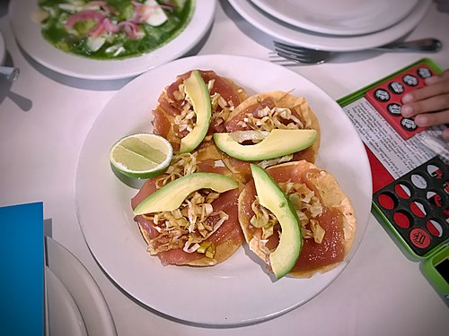

Tostada

The name usually refers to a flat or bowl-shaped tortilla that is deep-fried or toasted, but may also refer to any dish using a tostada as a base.
It can be consumed alone, or used as a base for other foods.
Corn tortillas are usually used for tostadas, although tostadas made of wheat or other ingredients can also be found.
Ingredients:
- 2 skinless, boneless chicken breasts, diced
- ½ (1 ounce) package taco seasoning mix
- 1 (16 ounce) can refried beans
- 6 corn tostada shells
- 1 cup shredded Mexican cheese blend
- 1 tomato, diced
- ¾ red onion, diced
- ¾ green bell pepper, diced
- ½ cup chopped fresh cilantro
- ¼ cup salsa, or to taste (Optional)
- ¼ cup sour cream, or to taste (Optional)
Instructions to prepare:
- Preheat the oven to 375 degrees F (190 degrees C).
- Place chicken into a frying pan over medium heat. Sprinkle with taco seasoning and cook until no longer pink in the center and juices run clear, 5 to 7 minutes. An instant-read thermometer inserted into the center should read at least 165 degrees F (74 degrees C).
- Spread a thin layer of refried beans onto each tostada shell; sprinkle each with Mexican cheese. Divide cooked chicken on top of cheese layer. Sprinkle tomato, red onion, and bell pepper evenly on top of each tostada. Place tostadas on a baking sheet.
- Bake in the preheated oven until crispy, 10 to 15 minutes.
- Remove tostadas from the oven. Sprinkle with cilantro and spread salsa and sour cream on top.
Return to Homepage